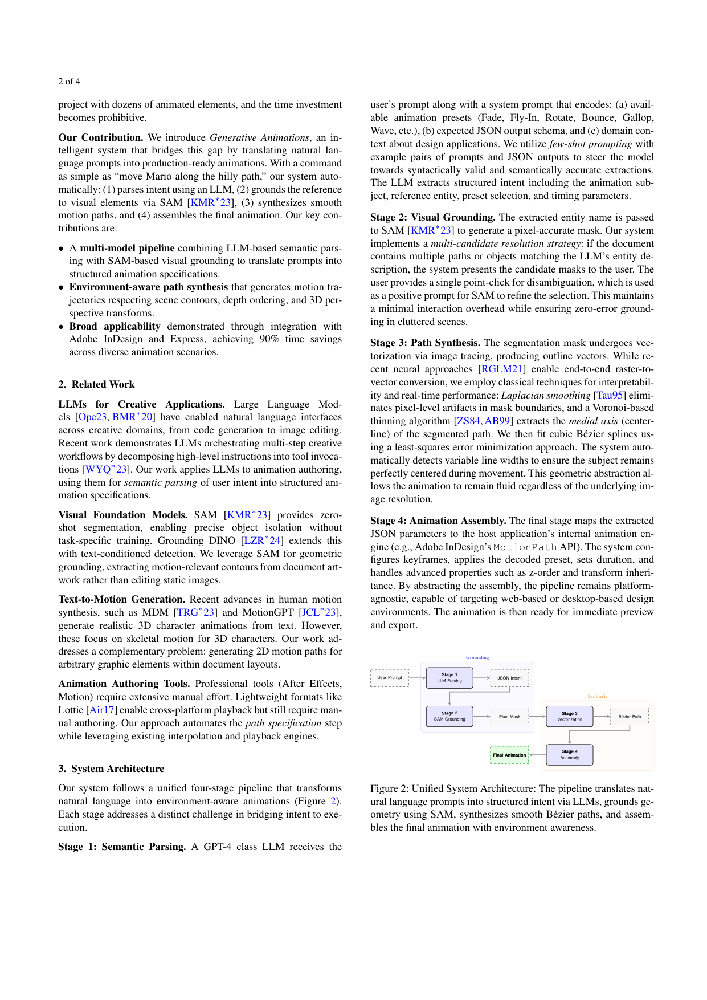
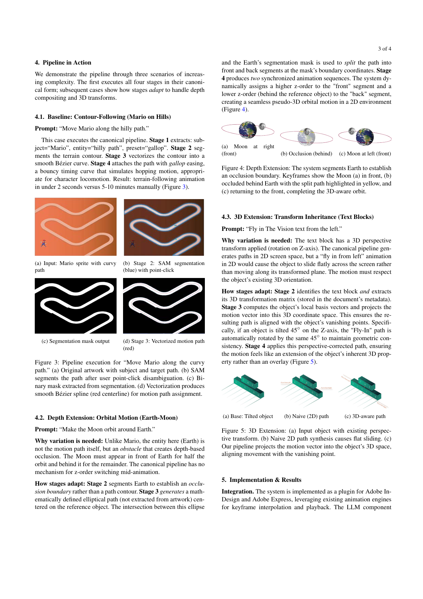
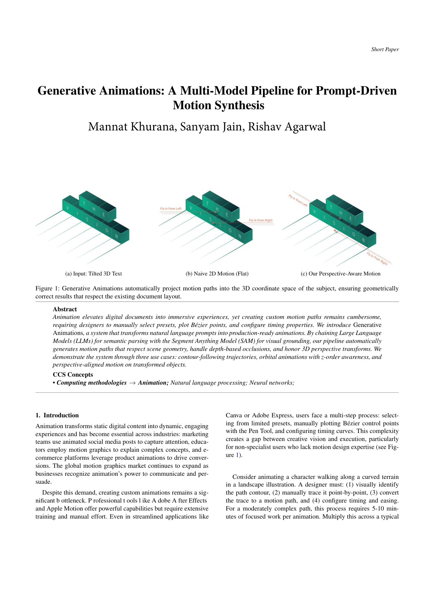

Generative Animations introduces a novel pipeline combining LLM semantic parsing with SAM visual grounding to automatically generate environment-aware motion paths from natural language prompts, achieving 90% time savings.
本文提出了一种结合大语言模型（LLM）与分割一切模型（SAM）的多模型流水线，能够将自然语言提示自动转换为生产级2D动画。该系统可生成尊重场景几何、深度遮挡和3D透视变换的运动路径，相比手动动画创作节省约90%的时间。
Deep Note — generative-animations
Key Takeaways - A multi-model pipeline (LLM + SAM) translates natural language prompts into production-ready 2D animations. - The system automatically generates motion paths that respect scene geometry, depth occlusions, and 3D perspective transforms. - Achieves ~90% time savings compared to manual animation authoring in tools like Adobe InDesign/Express. - Demonstrates three use cases: contour-following, orbital with z-order, and perspective-aligned motion. - Pipeline is platform-agnostic and integrates with existing animation engines.
0) Metadata
- Title: Generative Animations: A Multi-Model Pipeline for Prompt-Driven Motion Synthesis
- Alias: generative-animations
- Authors: Mannat Khurana, Sanyam Jain, Rishav Agarwal
- arXiv ID: 2605.27203
- Published:
- Links:
- Abs: https://arxiv.org/abs/2605.27203
- HTML: https://arxiv.org/html/2605.27203v1
- PDF: https://arxiv.org/pdf/2605.27203
- Tags: animation, llm, sam, prompt-driven, motion-synthesis
- Domains: system_safety
- Rating: 3/5 (base 1 + quality 1 + observation 1)
1) Why-read
Generative Animations introduces a novel pipeline combining LLM semantic parsing with SAM visual grounding to automatically generate environment-aware motion paths from natural language prompts, achieving 90% time savings.
2) CRGP
C — Context
Creating custom motion paths in professional tools like Adobe After Effects or streamlined apps like Canva requires manual selection of presets, plotting Bézier points, and configuring timing. This process is time-consuming (5-10 minutes per animation) and creates a gap between creative vision and execution, especially for non-specialists.
R — Related work
- LLMs for creative applications: orchestrating multi-step workflows from high-level instructions (e.g., code generation, image editing).
- Visual foundation models: SAM for zero-shot segmentation, Grounding DINO for text-conditioned detection.
- Text-to-motion generation: MDM and MotionGPT for 3D skeletal motion from text.
- Animation authoring tools: After Effects, Motion, Lottie – all require manual path specification.
G — Gap
Existing text-to-motion methods focus on 3D skeletal animation, not 2D motion paths for arbitrary graphic elements in document layouts. Manual animation authoring remains a bottleneck, requiring significant time and expertise even in streamlined tools.
P — Proposal
A four-stage pipeline: (1) LLM (GPT-4) parses user prompt into structured JSON intent; (2) SAM generates pixel-accurate mask of the reference entity; (3) vectorization extracts Bézier path via Laplacian smoothing and Voronoi thinning; (4) assembly maps parameters to the host application's animation engine. Key insight: chaining LLM with SAM enables automatic geometry-aware path synthesis that respects scene contours, depth ordering, and 3D transforms.
---
4) Experiments
Main results
Three use cases demonstrated: (1) Contour-following (Mario on hills) – animation in under 2 seconds vs. 5-10 minutes manually. (2) Orbital animation with z-order awareness (Moon around Earth) – dynamic z-order assignment creates seamless pseudo-3D orbit. (3) Perspective-aligned motion (tilted text block) – motion vector projected into object's 3D coordinate space, automatically rotated by 45° to match vanishing point.
Ablation
The multi-candidate resolution strategy for SAM grounding: if multiple objects match the LLM's entity description, a single user point-click disambiguates, maintaining minimal interaction overhead while ensuring zero-error grounding in cluttered scenes.
Limitations
['Requires a single user point-click for disambiguation when multiple objects match the prompt.', 'Currently limited to 2D motion paths; 3D transforms are handled via projection into existing object space, not full 3D scene generation.', 'Dependent on the quality of SAM segmentation and LLM parsing; edge cases with ambiguous prompts may need manual correction.']
5) Why it matters
- Directly addresses the time bottleneck in animation authoring, relevant to your work on creative tools and human-AI collaboration.
- The multi-model chaining approach (LLM + SAM) is a practical example of combining language understanding with visual grounding for design automation.
- Demonstrates how to make professional animation accessible to non-specialists, aligning with your interest in democratizing creative tools.
6) Next steps
- [ ] Explore integration with other design tools (e.g., Figma, Sketch) to broaden applicability.
- [ ] Investigate using more advanced LLMs (e.g., GPT-4o) for richer semantic parsing and multi-step animation sequences.
- [ ] Extend the pipeline to handle 3D scene generation from scratch, not just projection onto existing 3D transforms.
- [ ] Evaluate user satisfaction and learning curve compared to manual authoring in a controlled study.
7) Scoring
3/5 = base 1 + quality 1 + observation 1
生成式动画：面向提示驱动运动合成的多模型流水线
主要结论 - 多模型流水线（LLM + SAM）将自然语言提示转换为生产级2D动画。 - 系统自动生成尊重场景几何、深度遮挡和3D透视变换的运动路径。 - 相比Adobe InDesign/Express等工具的手动动画创作，节省约90%时间。 - 展示了三种用例：轮廓跟随、带z-order的轨道运动、透视对齐运动。 - 流水线平台无关，可集成到现有动画引擎中。
1) 阅读理由
本文提出了一种结合LLM语义解析与SAM视觉定位的新型流水线，可从自然语言提示自动生成环境感知的运动路径，实现90%的时间节省。
2) CRGP（背景 / 相关工作 / 差距 / 方案）
背景：在专业工具（如Adobe After Effects）或简化应用（如Canva）中创建自定义运动路径需要手动选择预设、绘制贝塞尔曲线和配置时序，每个动画耗时5-10分钟，在创意愿景与执行之间形成鸿沟，尤其对非专业人士。
相关工作：LLM用于创意应用（如代码生成、图像编辑）；视觉基础模型（SAM用于零样本分割，Grounding DINO用于文本条件检测）；文本到运动生成（MDM、MotionGPT用于3D骨骼运动）；动画创作工具（After Effects、Motion、Lottie）均需手动指定路径。
差距：现有文本到运动方法聚焦于3D骨骼动画，而非文档布局中任意图形元素的2D运动路径。手动动画创作仍是瓶颈，即使在简化工具中也需大量时间和专业知识。
提案：一个四阶段流水线：(1) LLM（GPT-4）将用户提示解析为结构化JSON意图；(2) SAM生成参考实体的像素级精确掩码；(3) 通过拉普拉斯平滑和Voronoi细化提取贝塞尔路径；(4) 组装将参数映射到宿主应用的动画引擎。关键洞察：将LLM与SAM串联可实现自动几何感知路径合成，尊重场景轮廓、深度顺序和3D变换。
3) 实验
展示了三种用例：(1) 轮廓跟随（山丘上的马里奥）——动画在2秒内完成，而手动需5-10分钟。(2) 带z-order感知的轨道动画（月球绕地球）——动态z-order分配创建无缝的伪3D轨道。(3) 透视对齐运动（倾斜文本块）——运动向量投影到对象的3D坐标空间，自动旋转45°以匹配消失点。
消融实验
SAM定位的多候选分辨率策略：当多个对象匹配LLM的实体描述时，用户单次点击即可消除歧义，在保持最小交互开销的同时确保杂乱场景中的零错误定位。
局限性
['当多个对象匹配提示时，需要用户单次点击消除歧义。', '目前限于2D运动路径；3D变换通过投影到现有对象空间处理，而非完整的3D场景生成。', '依赖SAM分割和LLM解析的质量；歧义提示的边缘情况可能需要手动修正。']
4) 重要性
- 直接解决了动画创作中的时间瓶颈，与你在创意工具和人机协作方面的工作相关。
- 多模型串联方法（LLM + SAM）是将语言理解与视觉定位结合用于设计自动化的实际案例。
- 展示了如何让非专业人士也能使用专业动画，与你普及创意工具的兴趣一致。
5) 下一步
- [ ] 探索与其他设计工具（如Figma、Sketch）的集成，以拓宽适用性。
- [ ] 研究使用更先进的LLM（如GPT-4o）进行更丰富的语义解析和多步动画序列。
- [ ] 扩展流水线以处理从零开始的3D场景生成，而不仅仅是投影到现有3D变换。
- [ ] 在受控研究中评估用户满意度和学习曲线，与手动创作进行比较。


